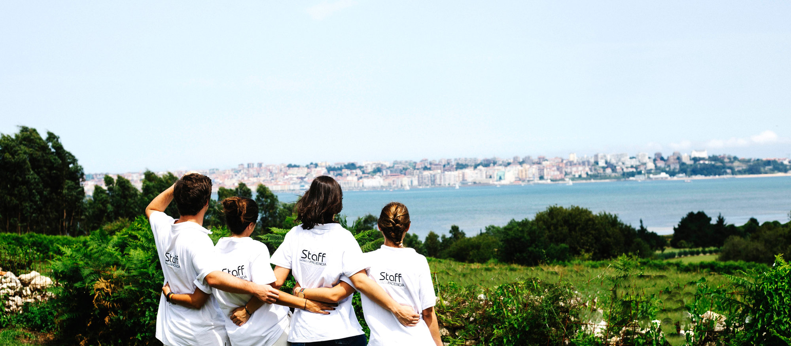
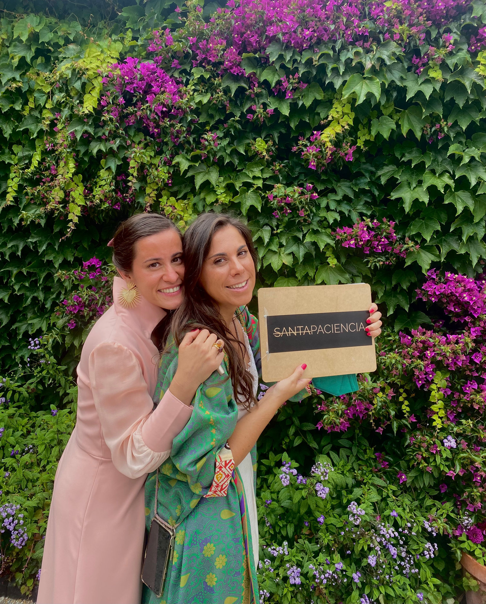

Así somos

Somos Mónica y Guiomar
Dos treintañeras que decidimos lanzarnos a emprender. Venimos del mundo del Marketing y de la Arquitectura y juntas hemos creado SANTAPACIENCIA Eventos.
SANTA empezó como un plan B que nos ha enamorado y se ha convertido en nuestro plan A.
Principalmente nos dedicamos a la organización de bodas y al diseño y producción de invitaciones y todos los elementos de papelería necesarios para ese día.
Nuestro objetivo es ayudar a chicas como nosotras, que quieren que su boda sea una boda bonita, elegante y súper cuidada, pero sin necesidad de derrochar lo que tanto nos cuesta ganar.
El buen rollo y la naturalidad nos definen. Conseguimos conectar con nuestras novias y crear un vínculo de confianza que nos convierte en amigas, y el resultado es que ellas están súper tranquilas y disfrutan mucho más de todo el proceso.
En una terraza madrileña, entre risas y cervezas, que es lo que les gusta, nació SANTAPACIENCIA.

Se conocieron en 2011 y no se separaron
La historia de SANTAPACIENCIA comienza en 2011 cuando dos amigas de Mónica y Guiomar pensaron que les tenían que presentar porque eran calcos. Y así fue, se conocieron y no se separaron.
Mónica viene del mundo del Marketing y Guiomar de la Arquitectura. En un momento en el que Mónica se sentía atrapada en un mundo laboral que no le hacía feliz, Guiomar le dio ese empujón que te abre los ojos y te recuerda quién eres, y dónde quieres estar. Esa es Guiomar para Mónica, su muleta.
Guiomar llevaba brujuleando en este mundo de las bodas desde hacía varios años, pero nunca supo cómo profesionalizar y hacer de su hobby su camino. Si nuestra Guiomar es una lanzada que se atreve con todo, necesitaba que Mónica y su perfeccionismo cogieran las riendas. Esta es Mónica para Guiomar, su guía.
Una noche de 2018 en una terraza madrileña, entre risas y cervezas que es lo que les gusta, volvieron a hacer de las suyas y nació SANTAPACIENCIA. A Guio le cuesta reconocer que el nombre fue ocurrencia de Mónica, fruto de una propuesta de Guio bastante poco elegante y que Mónica transformó. Fueron creciendo y madurando juntas. Mónica dice que se conocen de otra vida pasada; quién sabe, igual eran marido y mujer, porque se complementan hasta cuando discuten: son como un matrimonio bien avenido.
Hay reuniones que inevitablemente se tienen que hacer en la oficina con un aire más serio, pero donde realmente surge la magia es cuando están con sus novios trabajando en una terraza, cerveza en mano.
Saben que su fuerte está en las distancias cortas, pero lo que es una pasada es cómo se desenvuelven y dominan la organización de eventos en casas particulares; el campo exige conocerlo.
Después de varios años, y una buena bofetada que les dio la pandemia, siguen peleando con garras y mucha alegría, por su proyecto, por llegar a cada vez más gente, por poder vivir de lo que realmente les hace felices.
Si las conoces te darás cuenta de que ellas son algo especial. No sabemos si por suerte o elección, las parejas que llegan a ellas se convierten en amigos, y han comprendido que para compartir un año entero de trabajo es fundamental. SANTAPACIENCIA, además de un proyecto, es el significado de FELICIDAD, en mayúsculas, en la vida de ambas.